1. レポジトリの URI を取得する
以下画像のボタンから、レポジトリの URI を取得できるのでコピーします。

2. 忘れにくい場所にレポジトリを clone する
以下のコマンドを実行します。
# ※1. レポジトリのURIは、実際に取得したものに置き換えてください。
# ※2. 「$」 は、コマンドプロンプトのプロンプトを表しています。実行する際は、コマンドプロンプトのプロンプトは入力しないでください。
# 「pwd」（自分のいる場所を確認する）、「ls」（ディレクトリ内のファイルを確認する）などのコマンドを使って、cloneする場所を確認してください。
$ git clone <レポジトリのURI(ペースト)>
3. clone したレポジトリを開く
クローンしたものを、VSCode や IntelliJ IDEA などの IDE で開きます。 これで、開発環境の準備は完了です！

1. ブランチを切る
まずは、自分が今いるブランチを確認します。 ブランチを確認するには、「git branch」 コマンドを実行します。 ※ 出力結果は、「main」ブランチにいることになっています。
$ git branch
// 出力結果
xxx@xxx Sample % git branch
feature/sample1
* main
自分がいるブランチを確認したら、次はブランチを切ります。 どこからブランチを切るかは、基本的には「develop」ブランチから切ることが多いです。 ただし、プロジェクトにブランチ運用は異なるので、必ずプロジェクトのルールを確認してください。
ブランチを切るには、「git checkout -b <ブランチ名>」 コマンドを実行します。
$ git checkout -b feature/sample2
// 出力結果
xxxx@xxxx Sample % git checkout -b feature/sample2
Switched to a new branch 'feature/sample2'
現在やった操作はこんな感じ。 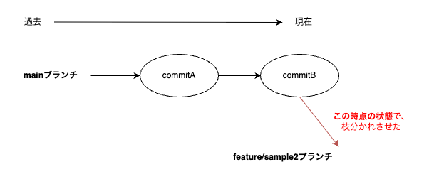
2. 変更を加える
ここでは、README.md に変更を加えます。 VSCode で README.md を開いて、適当なところに変更を加えます。
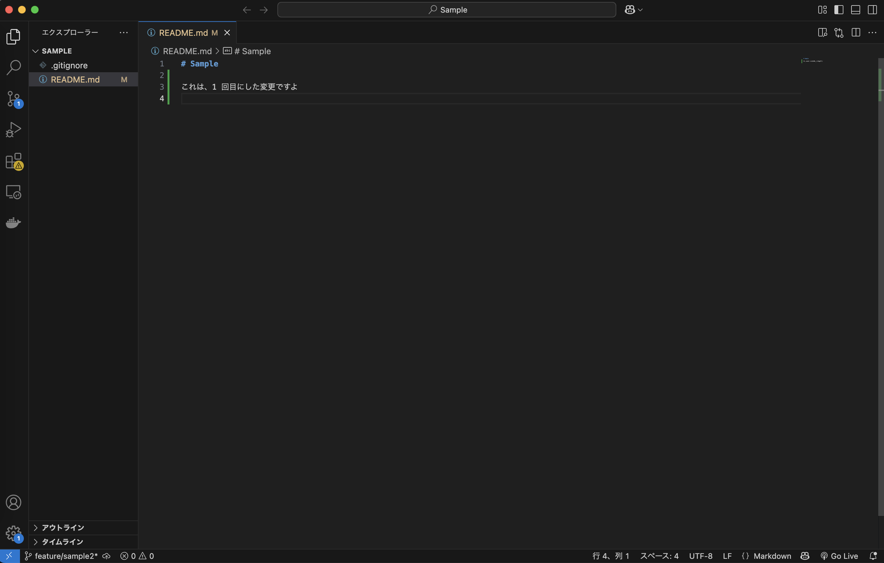
3. 変更を commit する
では、変更を commit してみましょう。 まずは、変更を加えたファイルを add します。（これを「ステージング」といったりします）
$ git add README.md
これで、README.md の変更がステージングされました。 現在の状態を確認するには、「git status」 コマンドを実行します。
$ git status
// 出力結果
On branch feature/sample2
Changes to be committed:
(use "git restore --staged <file>..." to unstage)
modified: README.md
余計なファイルがステージングされていないか確認したら、次は commit します。
$ git commit -m "README.md を変更したよ！"
// 出力結果
[feature/sample2 1234567] README.md を変更したよ！
1 file changed, 1 insertion(+), 1 deletion(-)
これで、README.md の変更が commit されました。 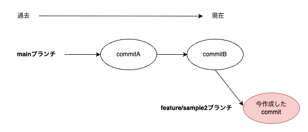
念の為、現在の状態を確認してみましょう。
$ git log
// 出力結果
commit e33e64f5385ad16069ab4ff7ab322699d20760f9 (HEAD -> feature/sample2)
Author: KazukiOtomo <cist.b219.k.otomo@gmail.com>
Date: Mon May 12 23:48:15 2025 +0900
README.md を変更したよ！
commit 8595523518586eb2928a6129b83de8ed87667e70 (origin/main, origin/HEAD, main)
Author: KazukiOtomo118 <129941419+KazukiOtomo118@users.noreply.github.com>
Date: Tue May 6 12:15:29 2025 +0900
Initial commit
ちゃんと commit されていることが確認できましたね！ ただし、このままでは、他の人には変更を見ることができません。 あくまで自分のローカル環境にセーブされた状態です。
4. push する
では、変更を リモートレポジトリ（Github）に push してみましょう。
$ git push origin feature/sample2
// 出力結果
Enumerating objects: 3, done.
Counting objects: 100% (3/3), done.
Delta compression using up to 8 threads
Compressing objects: 100% (2/2), done.
Writing objects: 100% (3/3), 1.03 KiB | 1.03 MiB/s, done.
Total 3 (delta 0), reused 0 (delta 0), pack-reused 0
remote: Resolving deltas: 100% (0/0), done.
To github.com:KazukiOtomo/sample.git
* [new branch] feature/sample2 -> feature/sample2
では、Github を開いて、push したブランチがあるか確認してみましょう。 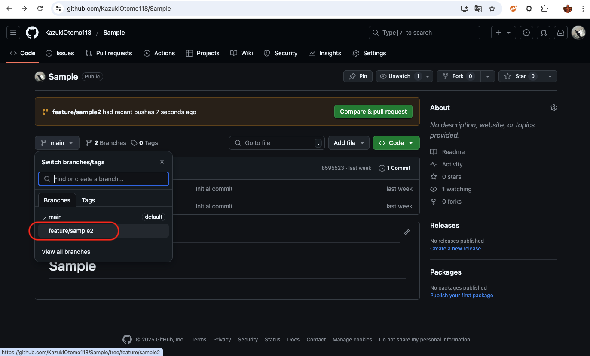
加えたコミットメッセージもあるし、README.md の変更も確認できましたね！ （蛇足ですが、README.md は環境構築方法などのドキュメントを記載するために使ったりします。） 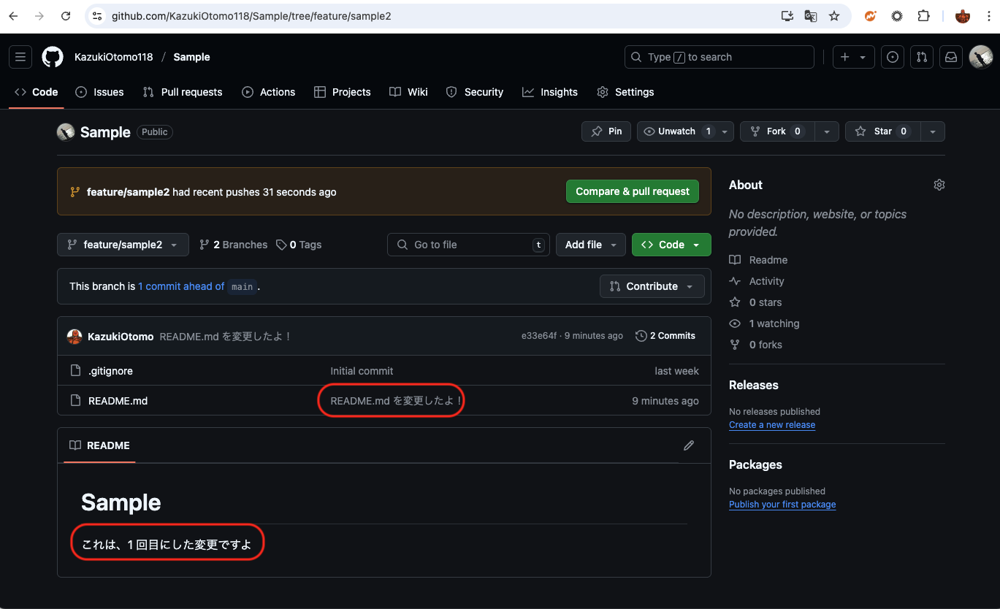
では、元の main ブランチに戻ってみましょう。
$ git checkout main
// 出力結果
Switched to branch 'main'
Your branch is up to date with 'origin/main'.
念の為、main ブランチにいることを確認します。
$ git branch
// 出力結果
* main
feature/sample2
次の仕事を振られたと想定しましょう！ README.md に変更を加えます。
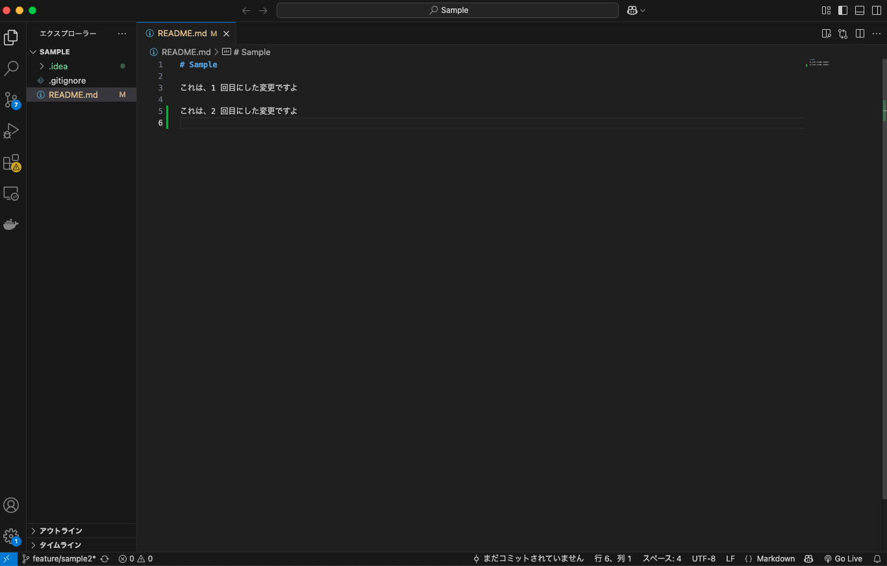
では、変更を commit しましょう。
$ git add README.md
$ git commit -m "README.md で2回目の変更をしたよ！"
// 出力結果
[main 1234567] README.md で2回目の変更をしたよ！
1 file changed, 1 insertion(+), 1 deletion(-)
でも、ちょっと待ってください。 今のまま push すると、直接 main ブランチに push されてしまいます。
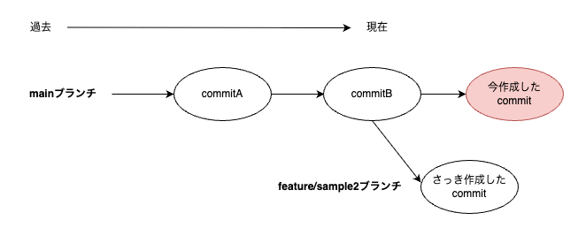
ただ、まだ push していないので、自分のローカル環境内だけの状態です。 では、commit を取り消して、元の状態に戻してみましょう。 まずは、元に戻したい commit のハッシュ値を確認します。
$ git log --oneline
// 出力結果
c39b714 (HEAD -> feature/sample2) README.md で2回目の変更をしたよ！
e33e64f (origin/feature/sample2) README.md を変更したよ！
8595523 (origin/main, origin/HEAD, main) Initial commit
// この場合は、e33e64fに戻したいので、e33e64fをコピーしておきます。
次に、commit を取り消すには、「git reset –soft <commit のハッシュ値>」 コマンドを実行します。
$ git reset --soft e33e64f
// 出力結果
Unstaged changes after reset:
M README.md
これで、commit が取り消されました。 確認してみましょう。
$ git log --oneline
// 出力結果
e33e64f (origin/feature/sample2) README.md を変更したよ！
8595523 (origin/main, origin/HEAD, main) Initial commit
無事に取り消されていることを確認できました。 落ち着いてブランチを切り直して push すれば問題ないですね。
$ git checkout -b feature/sample3
$ git add README.md
$ git commit -m "README.md で2回目の変更をしたよ！"
$ git push origin feature/sample3
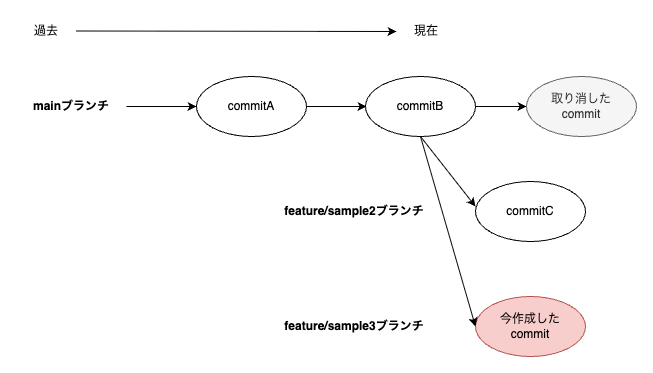
さて、feature/sample2 ブランチと feature/sample3 ブランチを切って変更を加えたわけですが、 まだ push しただけで、他の人には変更が見えていません。
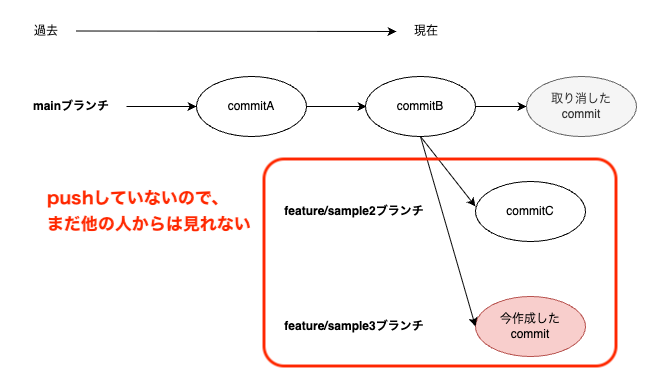
Pull Request を作成して、他の人からも見える状態にしましょう。 まずは、feature/sample2 ブランチを選択して、変更を push しましょう。
$ git checkout feature/sample2 // ブランチを移動
$ git branch // ブランチを確認
* feature/sample2
feature/sample3
main
$ git push origin feature/sample2 // push
次に、feature/sample3 ブランチも push します。
$ git checkout feature/sample3 // ブランチを移動
$ git branch // ブランチを確認
* feature/sample3
feature/sample2
main
$ git push origin feature/sample3 // push
では、プルリクエストを作成してみましょう。 Github を開くと、以下画像のような表示が出てきます。 「Compare & pull request」ボタンをクリックします。
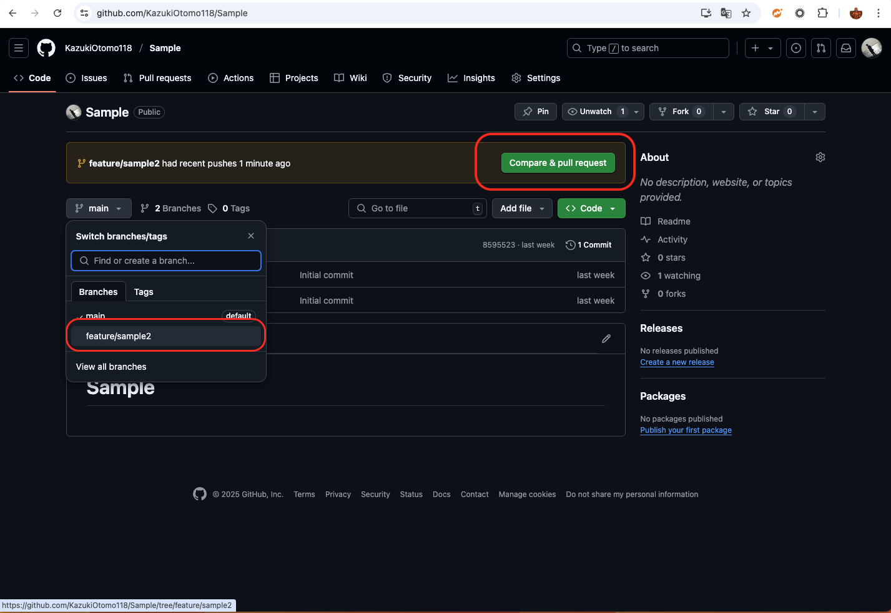
すると、プルリクエストの作成画面が表示されます。 色々なオプションがありますが、今回は特に大事な 5 つをピックアップします。
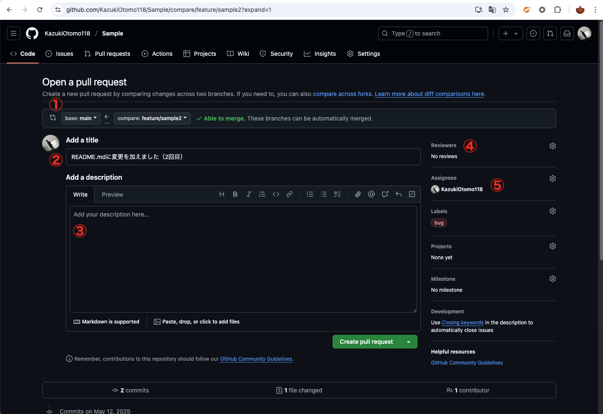
- ベースブランチ: プルリクエストをマージする先のブランチを選択します。通常は「main」や「develop」などのブランチを選択します。
- タイトル: プルリクエストのタイトルを記入します。分かりやすいタイトルをつけましょう。
- 説明: プルリクエストの説明を記入します。レビュアーに どこを見て欲しいのか、何を確認して欲しいのかを記入します。
- レビュアー: プルリクエストをレビューして欲しい人を指定します。レビュアーは、プルリクエストを確認して、問題がなければマージしてくれます。
- 担当者: プルリクエストの担当者を指定します。後から担当者で検索をかけることもできるので、指定しておくといいと思います。
項目を一通り入力したら、 「Create pull request」ボタンをクリックします。 （※これらの項目は後から編集ができるので、ここで完璧にする必要はありません。） これで、プルリクエストが作成されました。
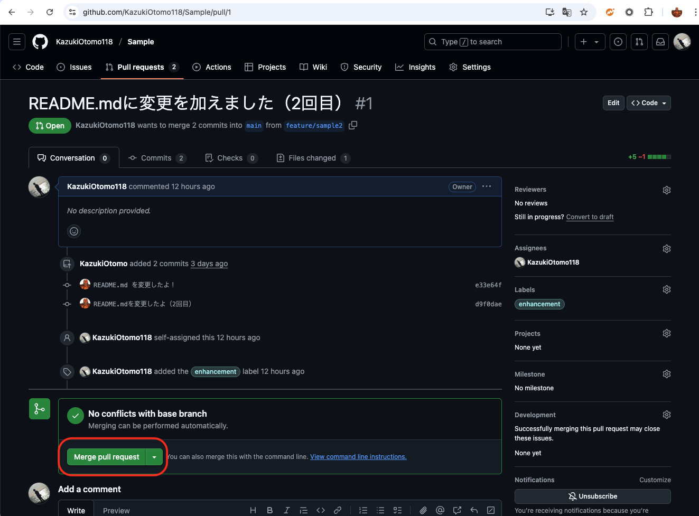
では、この状態で、プルリクエストをマージしてみましょう。
「Merge pull request」ボタンをクリックします。 続けて、「Confirm merge」ボタンをクリックします。
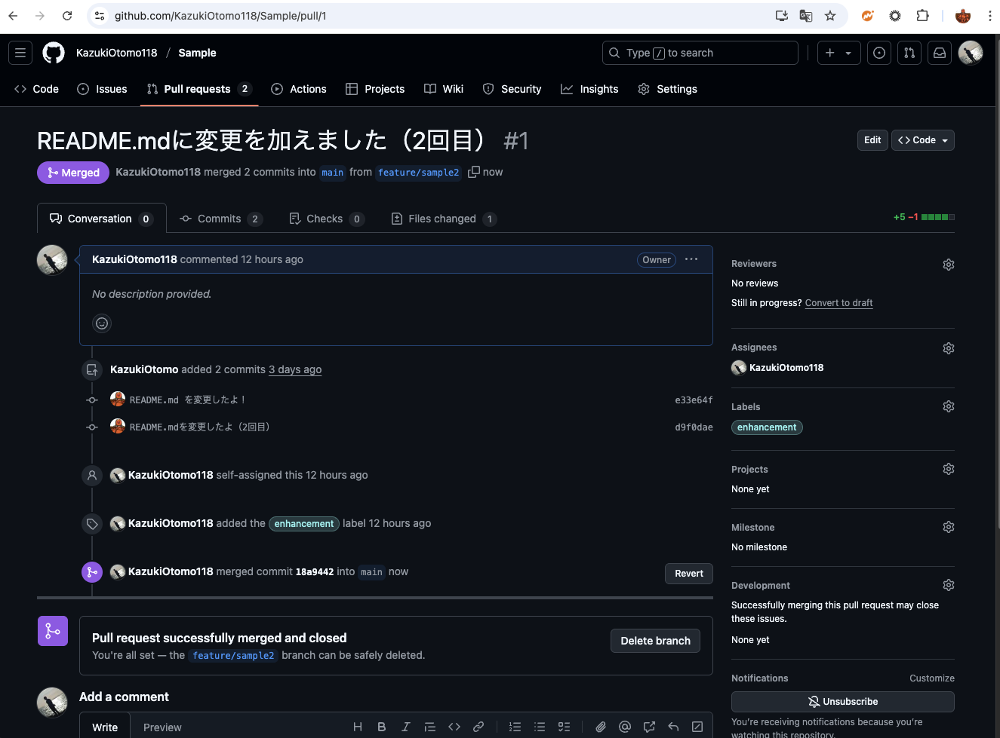
今のブランチ状況はこのような感じになっています。 feature/sample2 ブランチで行った変更が、main ブランチにマージされました。
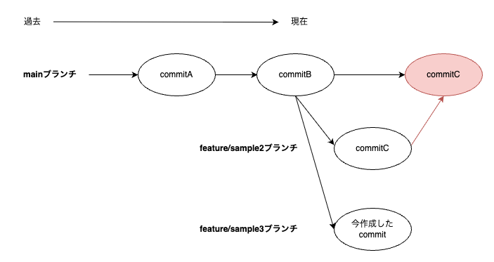
次に、feature/sample3 ブランチについても同様にマージしてみましょう。 しかし、そのままではマージができなさそうです。 なぜかというと、同じファイル「README.md」に対して同時に変更を加えたので、「コンフリクト」が発生してしまっているからです。
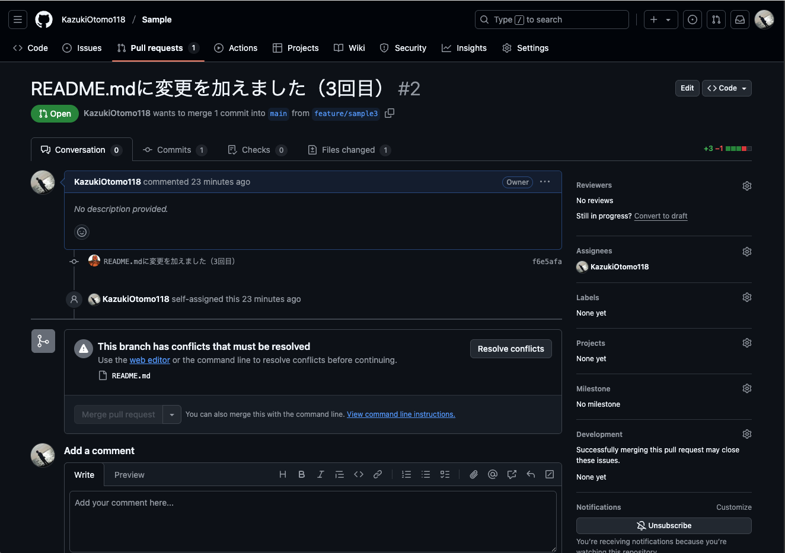
では、コンフリクトを解消してみましょう。 解消の方法は複数ある（ブラウザ上で直したり、VSCode で直したり）ので、 ここでは VSCode を使って解消してみます。
VSCode を開いて、以下の画像のように、「ブランチ」 > 「マージ」を選択します。 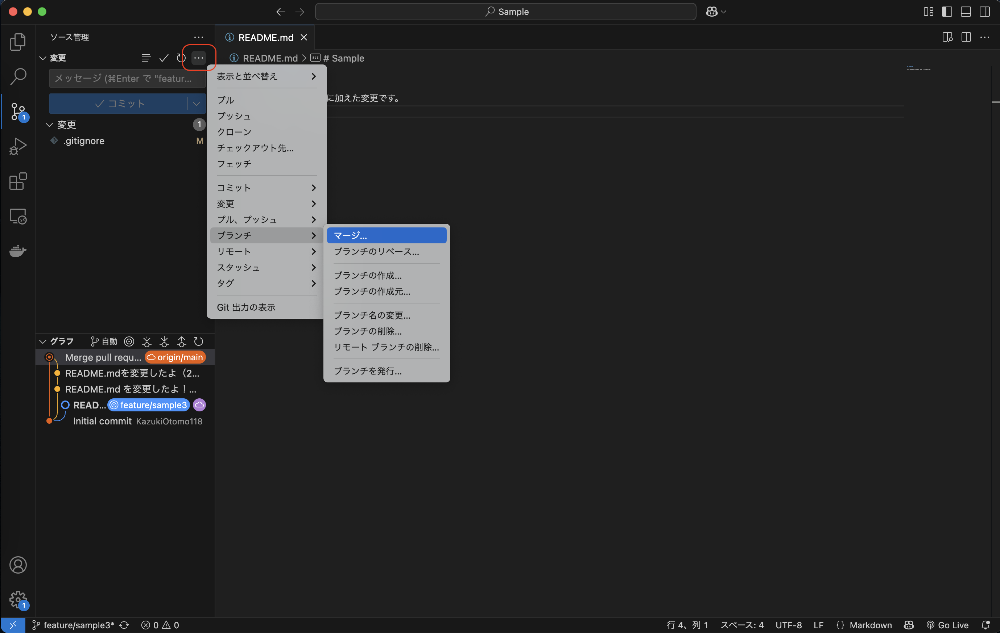
そして、「リモートの」 main ブランチにマージしたいので、こちらを選択します。 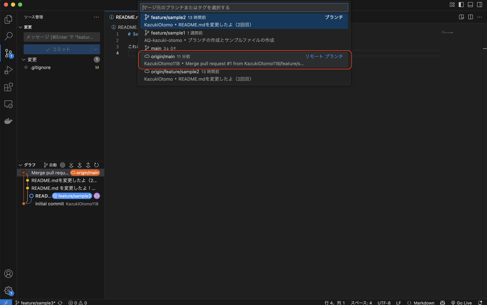
すると、コンフリクトが発生しているファイルが表示されます。 この画面でも解決できますが、便利な「マージエディタ」機能を使って解決してみましょう。 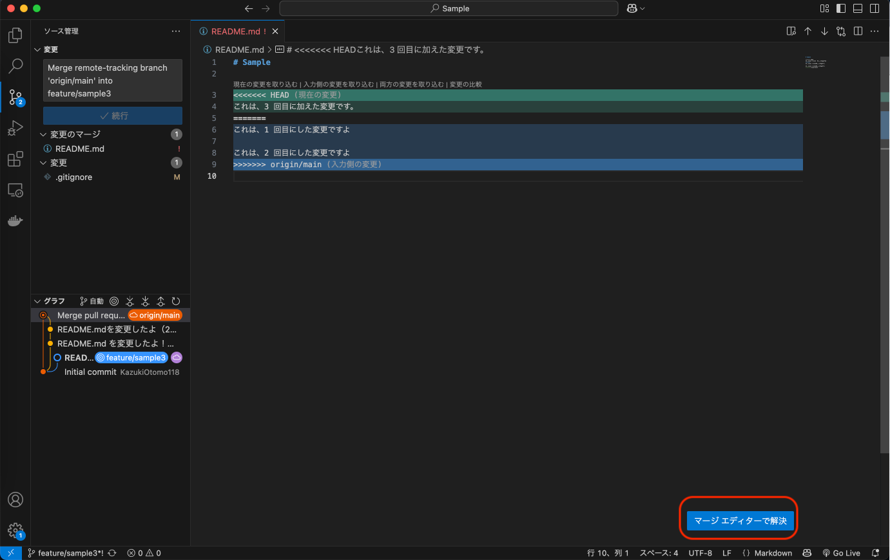
以下にマージを完了させた動画を添付します。 https://drive.google.com/file/d/107SF-_3jykZHXJz5xLUOUX53HXsY_Nan/view?usp=sharing
これで、問題なくマージできるようになったので、マージしていきましょう。 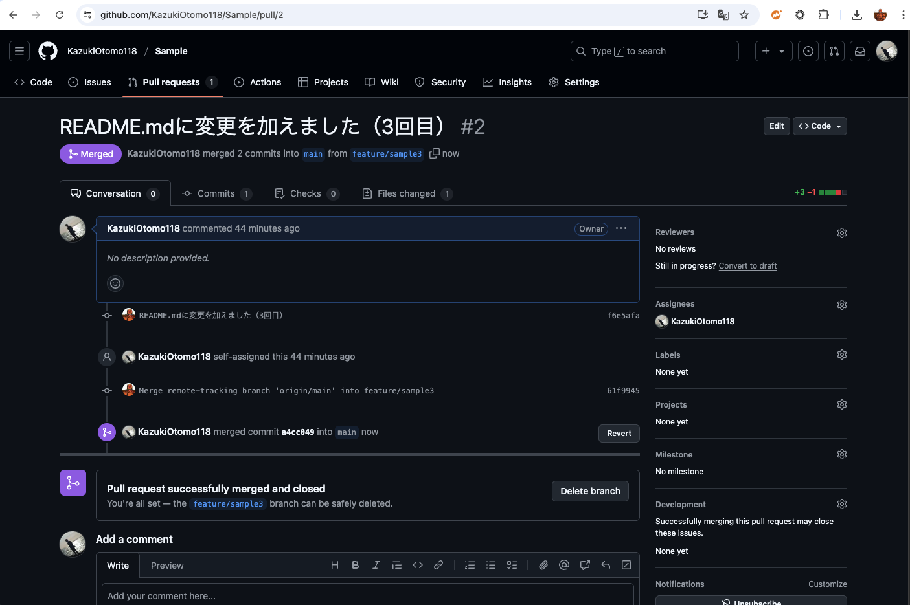
これが、コンフリクト解消の流れです。 仕事の現場では、コンフリクトが発生することはよくあるので、しっかりと覚えておきましょう。 ※分担する際には、できるだけ同じファイルを触らないようにするのがベストです。 （が、どうしても避けられない場合がほとんどなので、どのように変更を取り込めばいいか、集まって話し合うのが一番かなと思います。）
最終的なブランチ状況は以下のようになりました。 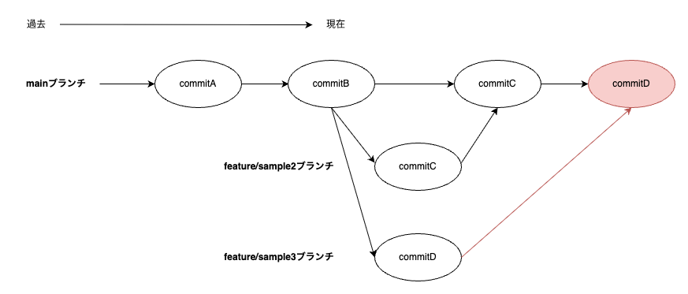